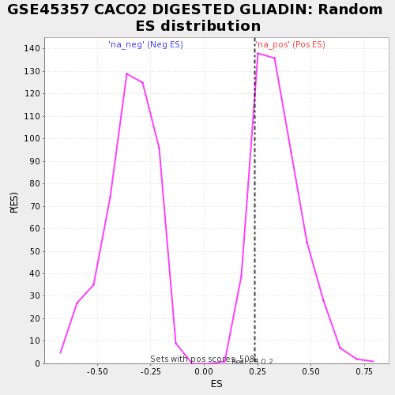

| | | Dataset | testA |
| Phenotype | NoPhenotypeAvailable |
| Upregulated in class | na_pos |
| GeneSet | GSE45357 CACO2 DIGESTED GLIADIN |
| Enrichment Score (ES) | 0.23572716 |
| Normalized Enrichment Score (NES) | 0.68254185 |
| Nominal p-value | 0.838 |
| FDR q-value | 1.0 |
| FWER p-Value | 1.0 |
Table: GSEA Results Summary
 Fig 1: Enrichment plot: GSE45357 CACO2 DIGESTED GLIADIN
Fig 1: Enrichment plot: GSE45357 CACO2 DIGESTED GLIADIN
Profile of the Running ES Score & Positions of GeneSet Members on the Rank Ordered List

Fig 2: GSE45357 CACO2 DIGESTED GLIADIN: Random ES distribution
Gene set null distribution of ES for GSE45357 CACO2 DIGESTED GLIADIN